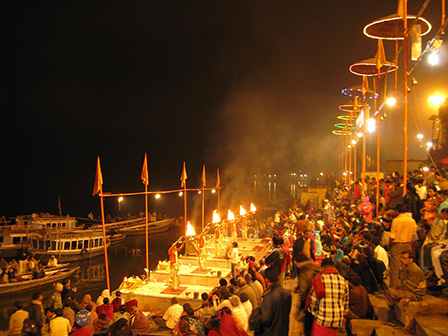

Varanasi
Ghats Of Varanasi
Ghats in Varanasi are riverfront steps leading to the banks of the River Ganges. The city has 88 ghats. Most of the ghats are bathing and puja ceremony ghats, while two ghats, Manikarnika and Harishchandra, are used exclusively as cremation sites.
Bengaluru
Vidhan Soudha
Situated at Ambedkar Bheedhi, Sampangi Rama Nagar in the heart of Bengaluru, Karnataka, the majestic and imposing Vidhana Soudha is the seat of the Karnataka state legislature. It was built in 1956 for a whopping USD 2,10,000 or roughly Rs 15 crores, back then. Owned by the government of Karnataka